🫶✨🖤 Love Beyond Barriers ✨💫💞
📖 The Story of Dhruv 🤴❤️ & Jiya 👸💕
🌸💔 A Journey of Love 💕, Struggles ⚔️, and Togetherness 🌈💍
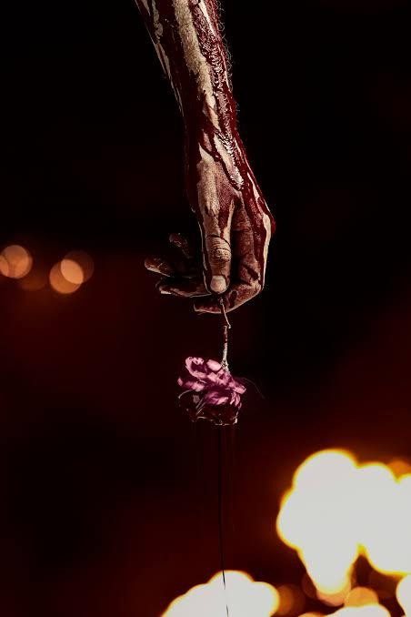
Who Am I
Myself Dhruv 💙, an Intermediate 1st-year student at Pragathi Junior College, Nalgonda 📚. My beloved’s name is Jiya ❤, who was studying at Govt. Girls College.
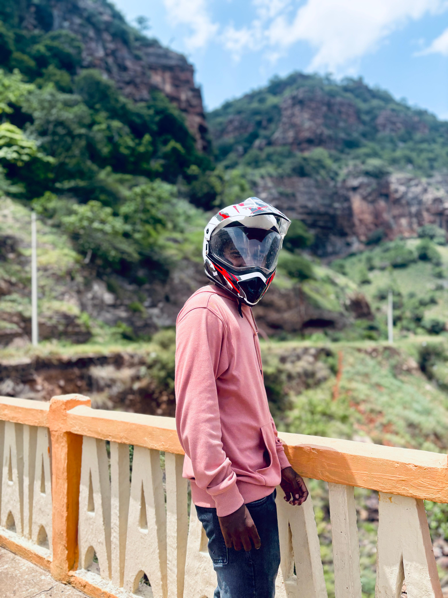
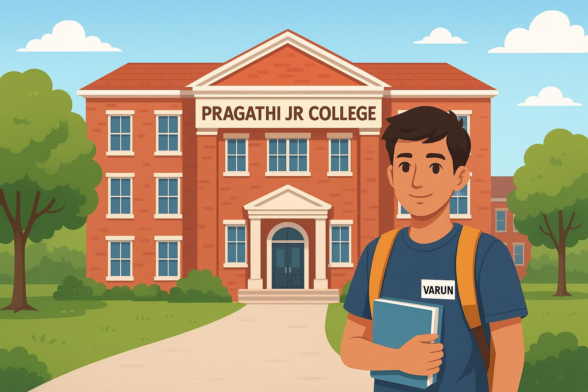
🌹 ■ ✨ Chapter 1: The Beginning ✨ ■ 🌹
In my class, I had a friend named Ishaan. One day, I asked him to help me set a relationship, but he didn’t respond. Later, he was talking with his close friend Khari 💬.That day, he told her: “My friend is so decent, he will care for you more than anyone else. He’s quite different.”Hearing this, Khari asked for my Instagram ID 📱. She sent me a follow request, but my account was private, and I didn’t respond. She got hurt 💔 and unfollowed me.A few days later, Ishaan asked me:“Did Khari message you?” I hadn’t noticed because I never checked the request. That day, I asked him for her account, and when she gave it, I messaged her. Slowly, Khari and I became close 😊. But since she already had a boyfriend, I didn’t propose to her. Later, due to a small quarrel, we stopped talking for 4–5 months.
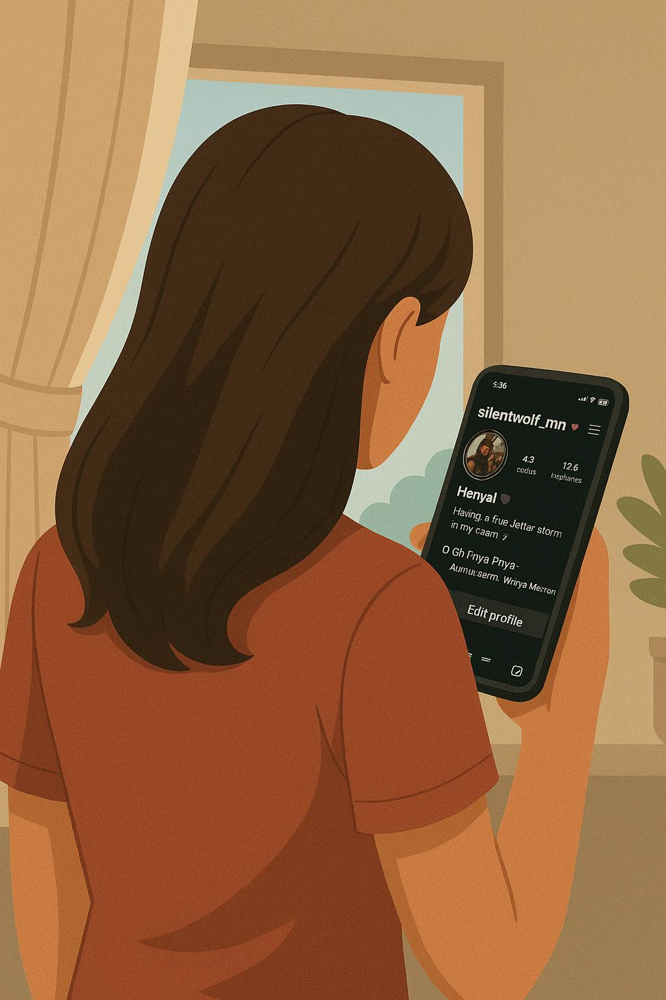
🌺 ■ Chapter 2: The Connection■ 🌺
After months, Khari and I connected again on Snapchat 👻. We started talking like before. One day, around 7 AM, she video-called me. I answered, but I was still sleepy and couldn’t even open my eyes 😅. She called again at 10 AM and said: “My friend wants to talk to you.” That friend was Jiya Sunaina 🌹. We talked on the phone for 3 hours straight. That night at 10 PM, Jiya called me again using Khari’s mobile, and this time, we spoke for 12 hours nonstop 🌙✨. During that call, Jiya proposed to me ❤. The next day, Khari found out, which created distance between me, Khari, and Jiya. But instead of breaking us, it only made Jiya and me grow closer 💑.
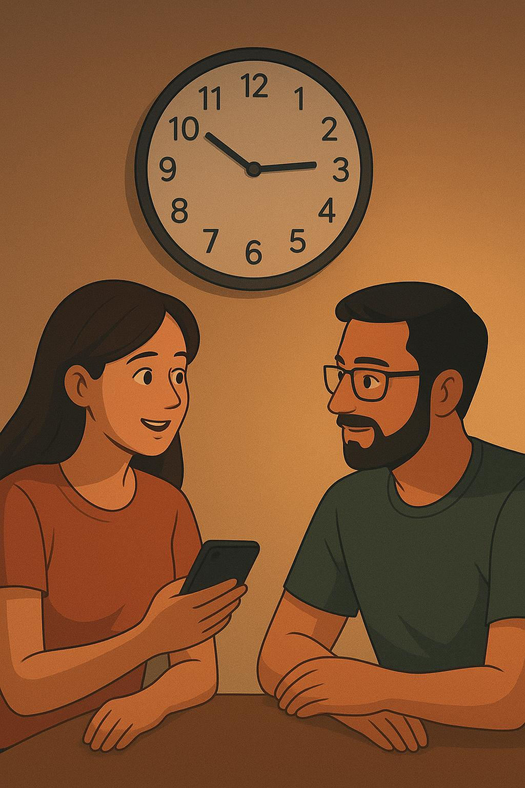
🎆 ■ Chapter 3: First Meeting ■ 🎇
On the occasion of Diwali 🎆, Jiya and I planned to meet outside. Around 6 PM, we wanted to go for a movie 🎬. I was riding an NS200 (my friend’s bike 🏍) towards Jiya when I got a phone call. While answering, my phone slipped from my hand near the Panagal flyover (Nalgonda). It broke into 3 pieces 💔📱. I couldn’t contact Jiya, as I didn’t know her hostel or number. I tried many ways until I finally logged into the MyJio app on a shop owner’s mobile. Luckily, I managed to reach her again.
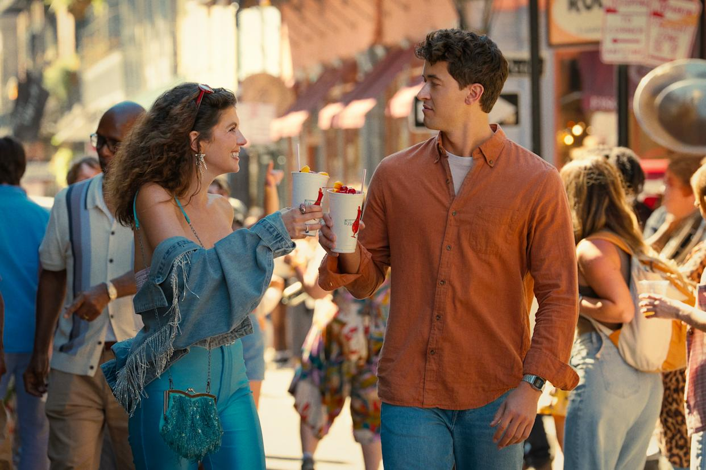
🌈 ■ Chapter 4: 🏠First Night Together 🌟
At that time, I was living in a bachelor’s room in Uppal. I took Jiya there. That night, we were together completely, without barriers, without clothes 💞🔥. We talked endlessly, shared promises 🤞, and built a deeper connection. The next morning, I dropped her back at her hostel. Later that evening, we met again, shared some wild talks 😉, and became even closer
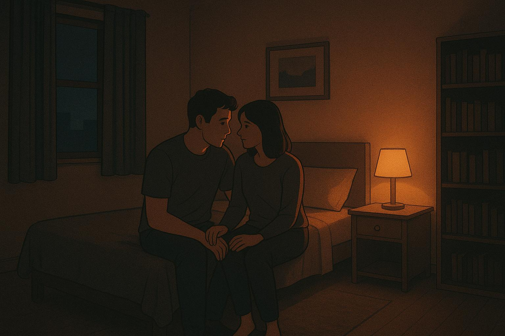
🖤 ■ Chapter 5: 🌸 A Fresh Beginning ■
After that first special night, things started to change. Jiya began giving me more importance 💖, and because of that, her friend Khari started becoming distant from both of us. She even told Ishaan: “In just 10 days, they started with a proposal, went to a room… what will people think about them?” But honestly, we didn’t care about what others thought ✨. For us, it was a fresh, clean relationship, without any destructions. We were so happy, talking more hours than sleeping—sometimes 10–12 hours per day without even realizing how time passed ⏳💬💞.
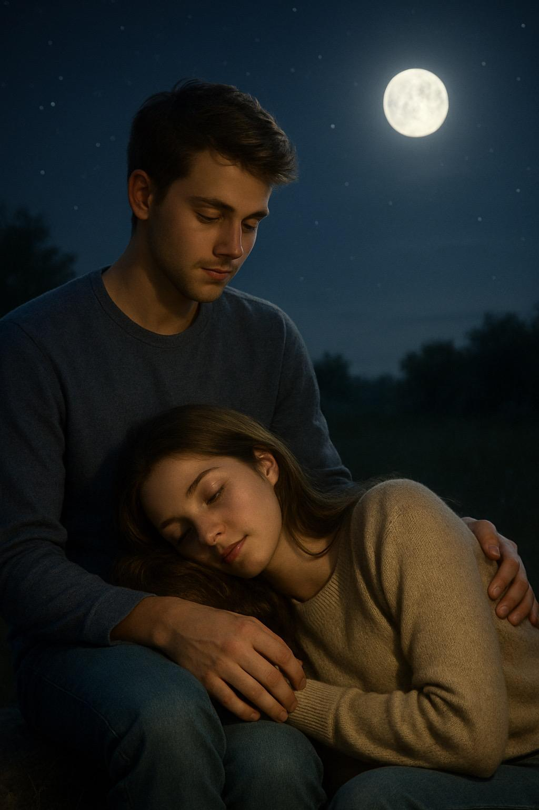
■ Chapter 6: 🌳 The Park Moments ■
In Nalgonda, there’s a park behind NG College 🎶🐦. One evening around 5 PM, we went there. The entry ticket was ₹20 for two. Sitting on a bench, we talked endlessly ❤. Suddenly, my eyes went toward another girl by mistake. Jiya noticed 😅, went to talk with her, and then brought her to me saying: “Dhruv, she’s like your sister. Do you have a rakhi for him?” The girl, named Sahasri, smiled and said she didn’t have a rakhi at that moment but would tie one the next day. Jiya handled the situation so cutely 💕. After that, we went deeper inside the park 🌳. We clicked some romantic pictures 📸—even wilder than in movies. I even kissed her neck in one, which we posted on her Insta story 🔥. But when her friend saw it, she shouted: “Are you mad? Delete it immediately!” We deleted it, but the memory stayed with us forever. When we tried to leave, we realized the park gate was closed 🕖. The security guard scolded us, saying the timings were only up to 6 PM (7 PM in summer). After requesting a lot, he finally let us out. I dropped Jiya at her hostel.
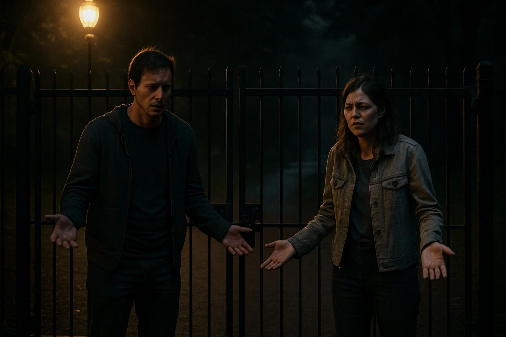
■ Chapter 7: 💔 Distance and Breakups ■
Soon after, I had to be in Hyderabad while Jiya was in Nalgonda. We couldn’t meet for almost 20 days. This distance led to fights 🥺. She wanted more time, but I couldn’t manage, and we almost broke up 💔. Khari once called me crying, saying: “Why are you behaving so cheap? Jiya is suffering a lot, please leave her.” Out of guilt, I said okay. But the next day, I messaged Jiya, apologized, and convinced her back. Slowly, we started talking again. Eventually, even Khari accepted our bond, and the three of us became close again 💕. I used to flirt with both playfully, and all of us enjoyed those moments 😄. But Jiya’s over-love sometimes felt like torture to me 💔. One day, I shouted at her and didn’t lift her calls. She called me 107 times 📱😭, and when I didn’t respond, she attempted to leave hostel and even thought of suicide by going to the railway station. When I came to know, I rushed from Hyderabad to Nalgonda at night. By then, they had found her. I hugged her tightly 🤗, said sorry, and we patched up. That night, we roamed the roads 🚶♂🚶♀ until 4 AM. Since the hostel was closed, we stayed in Chaya Someshwar Temple 🛕, slept for a while, and even faced police patrol 🚔. They took our phones and warned us, saying: “Study well, get a job, marry her, then no one will question you.”
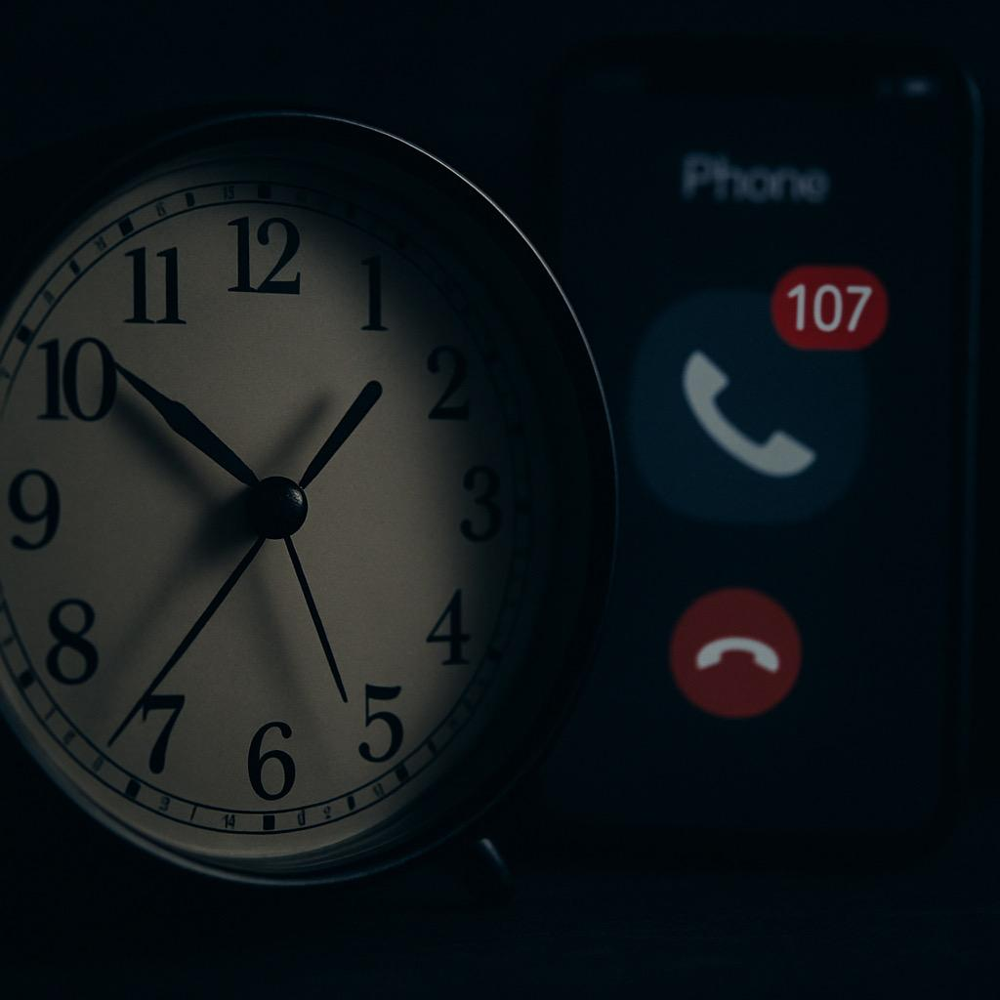
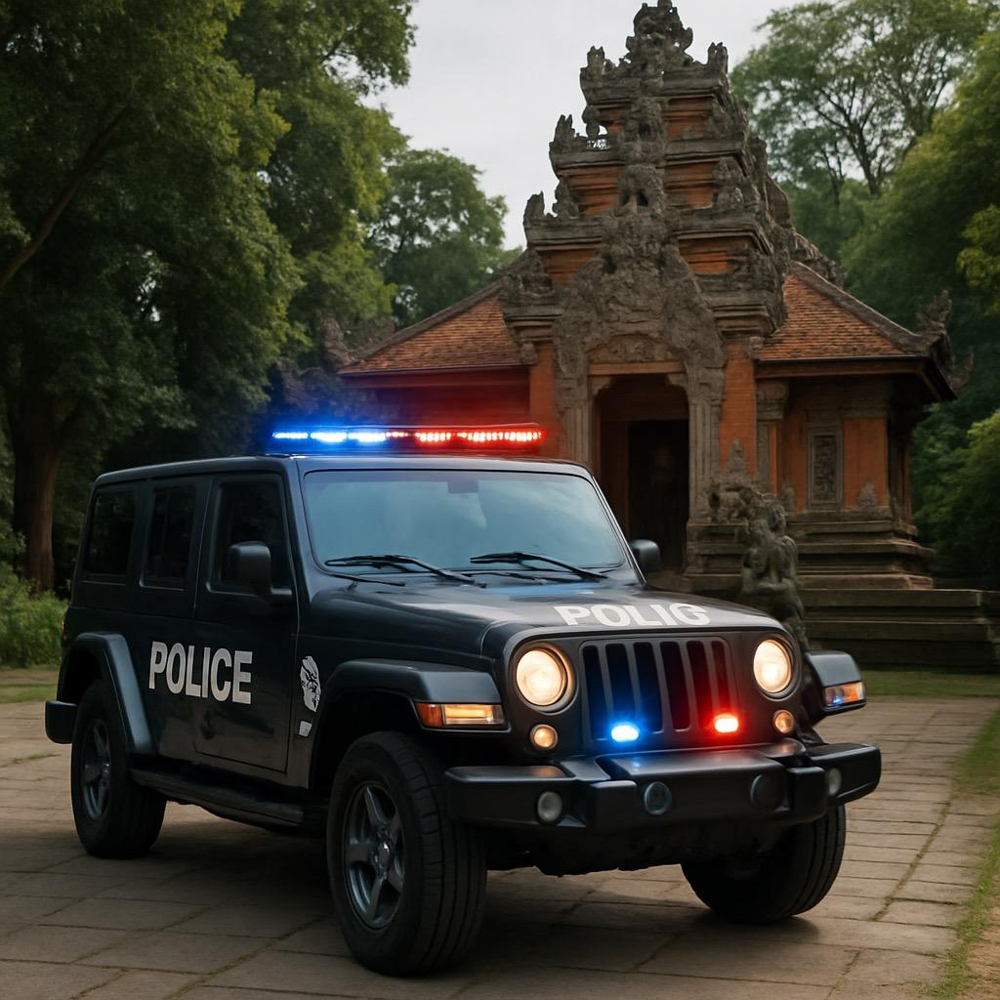
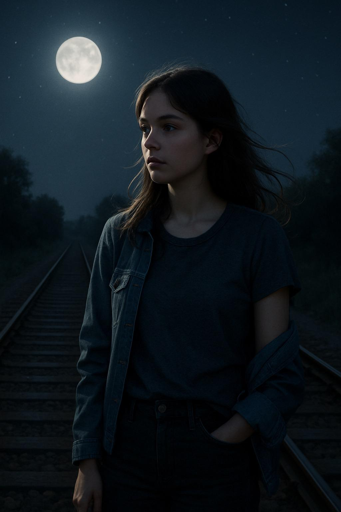
■ Chapter 8: 👨👩👧 Jiya Meets My Sister■
Later, Jiya met my sister Shanvi 👧. She gifted her ice cream, a dress, and little toys 🎁. Shanvi was very happy, but Jiya cried because of the park incident earlier, where we were almost caught by police again. Still, we patched up as usual. We fought, we loved, we patched up faster than a cheetah 🐆💞.
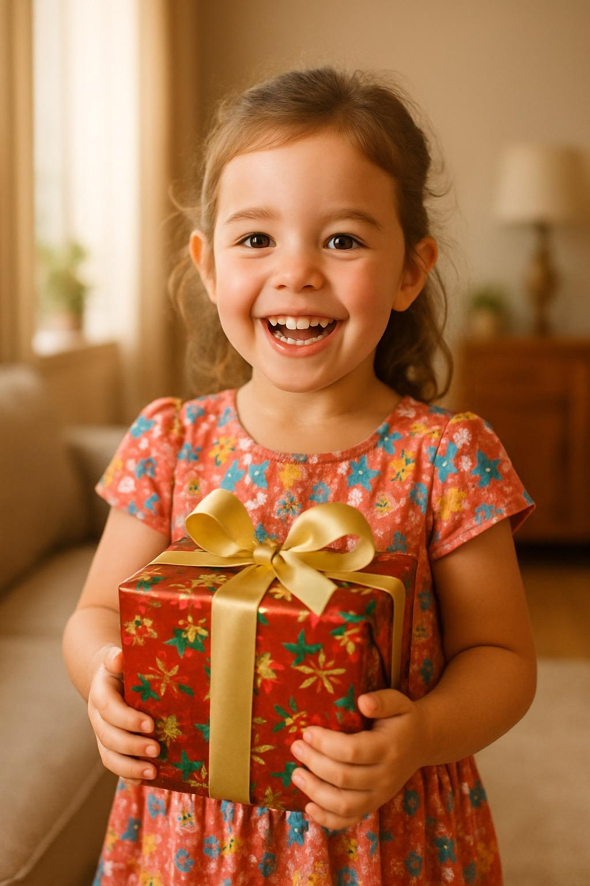
■ Chapter 9: 🎄 December Memories■
Christmas holidays came 🎅🎄. I had 5 days, and Jiya had a week. She decided to stay with me in my room at Uppal. We spent the entire week together 💑, with endless kisses, wild romance 🔥, cooking, sharing food, even drinking and smoking together 🍻🚬. Those 7 days were magical ✨—full of uncountable memories, pictures, and love stronger than ever.
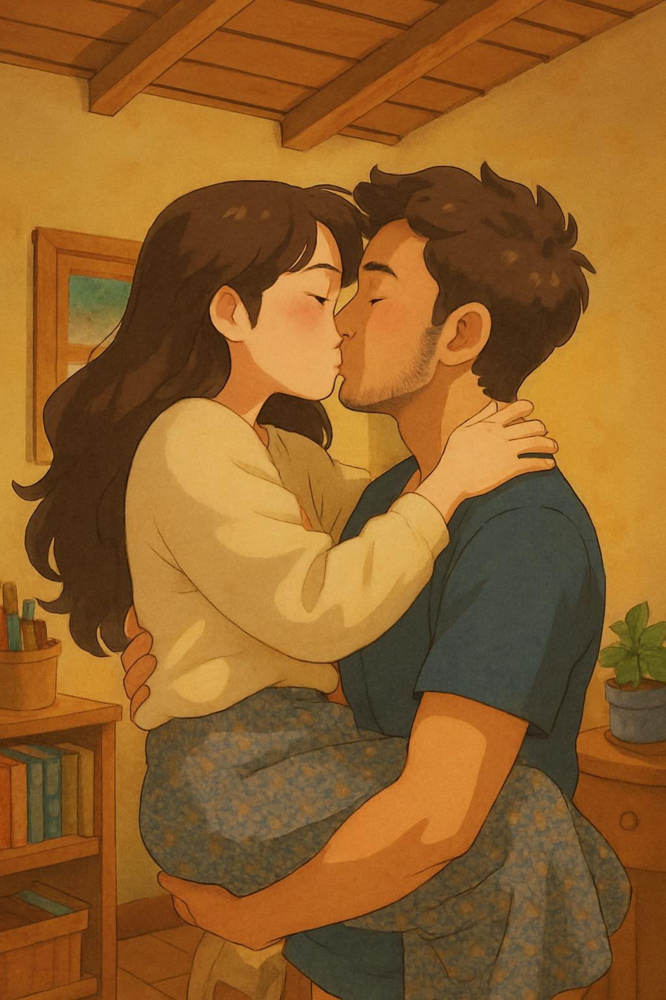
■ Chapter 10:🌊 Highs and Lows■
From bus stand nights in the cold ❄🔥, to almost meeting with accidents on highways 🛣, to near-death misadventures—our journey was filled with risk and passion. On Dec 31st 🎆, while I was in a party, Jiya went to Bapatla beach with Khari. Unfortunately, some boy misbehaved with her 😡. She cried to me on the phone, but refused to let me take action.
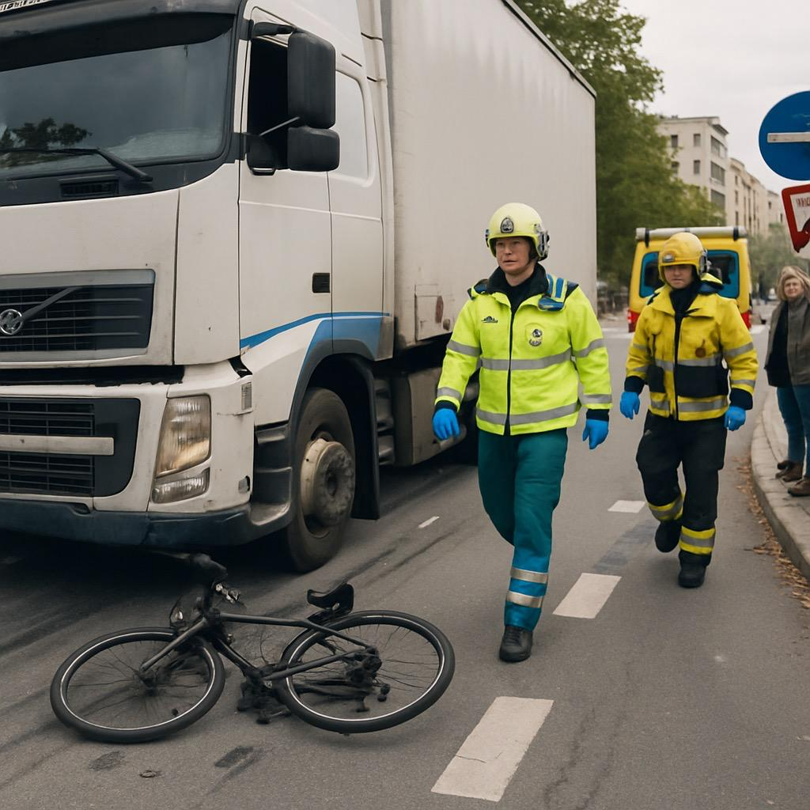
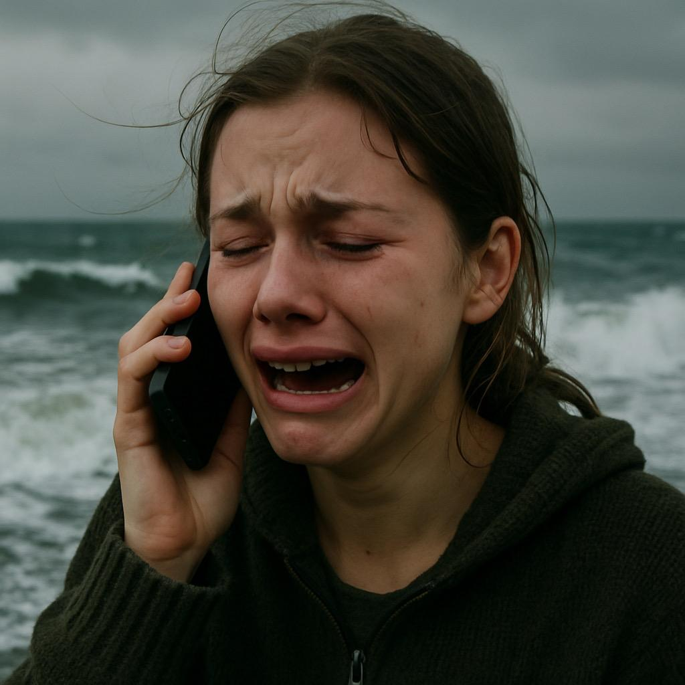
Chapter 11: 🎄 Valentines Day ♥
On Feb 14 ❤, we watched the re-release of Oye, a love story movie, with Khari and her boyfriend Eshwar. have some romantic moves at there and enjoyed lot and we didn’t go any other places bcoz there are restriction on feb14.
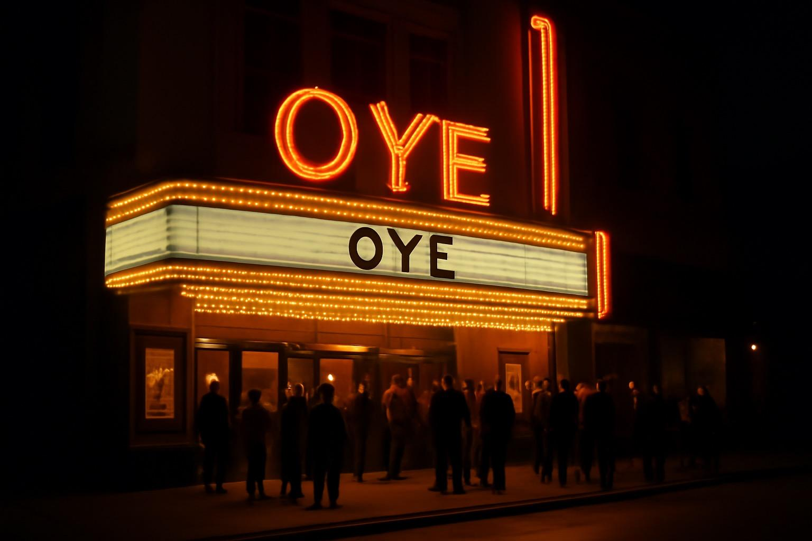
■ Chapter 12:😔 Family, Caste, and Pain■
One day, Jiya’s sister tricked me with a fake account and showed our memories to her parents 📸. They beat her brutally, poured chilli powder in her eyes 🌶😢, insulted me because of Intercaste. Jiya, only 17, tried to run away with me 🚌, but I stopped her because marriage was not possible at that age. Later, she attempted suicide twice—once by consuming pills, another by hanging attempt 💔. Her family forced her into matches, but she rejected all 💍. They didn’t like me only because of caste. We lost contact for 8 months 📵. One fine day, Jiya called me again, apologizing. She even lied once, saying she slept with someone, just to make me hate her—but I knew it wasn’t true. We fought again, patched up again, but her family’s torture continued. Still, deep down, we both knew our love was stronger than anything else ❤🔥.
🌟 ■ Moral of the Story ■ 🌟
💞 True love is never about how easy the journey is, but about how strong you stand together when the world is against you 🌍🤝. 💔 Struggles, tears, and challenges will come ⚡😢, but love built on trust, loyalty, and care can survive anything ❤️🔥. 🌸 Dhruv & Jiya’s story reminds us that — when two hearts beat as one 💓🔗, no distance, no family pressure, and no society can ever break them 🕊️💍. ✨ In the end, love always finds a way 🌈❤️♾️.